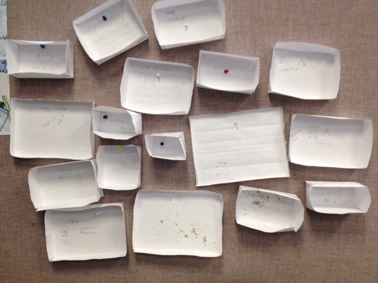
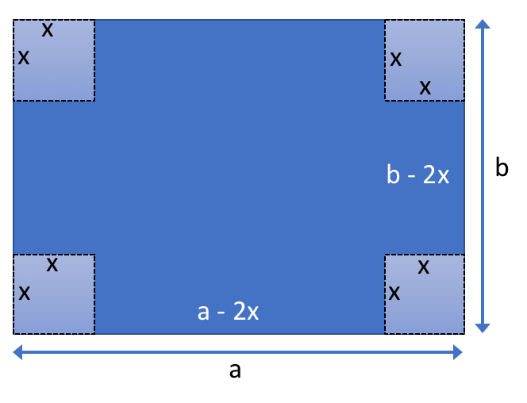
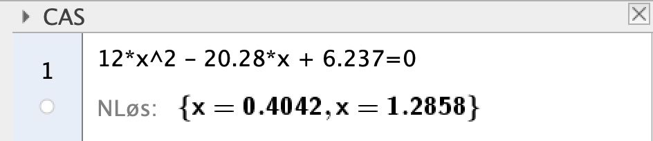

Optimalisering - papireske¶
Creative Commons BY-SA : bitjungle (Rune Mathisen) og fuzzbin (Tom Jarle Christiansen)

Hva er det største volumet som er mulig å lage av et A4-ark når du bretter opp sidene, sånn at du får en eske? Det er ikke helt opplagt hva svaret er, med det er flere måter å finne løsningen på. Er du klar for utfordringa?
Denne problemstillinga er et typisk ingeniørproblem. Hvordan kan du best utnytte materialet du har tilgjengelig? Vi skal se på tre mulige måter å løse dette problemet.
I utgangspunktet trenger du egentlig bare en enkel formel for å løse problemet. Volumet av en rett prisme er gitt ved:
Det er også greit å vite lengden og bredden på et A4-ark. Du kan godt måle, men standardmålene er en lengde på 2,97 dm og en bredde på 2,1 dm. Jeg liker å bruke dm som enhet, for da får jeg regne ut volumet til esken i liter.
Prøve og feile¶
En mulig løsningsstrategi er å prøve og feile. Du prøver rett og slett å brette en eske, og så måler og regner du ut. Slik fortsetter du så lenge du orker. Det kan hende at metoden fører frem, men det er tidkrevende, du må kanskje bruke en del ark og du må ha litt flaks. La oss forsøke.
Jeg prøver meg med tre ulike høyder på kantene, lav, middels og høy. Det er kanskje ikke helt opplagt at kanthøyden på lengden og bredden må være like høye, men ulike sidehøyder betyr bortkastet materiale. Tenk litt over det.
Det er ikke tilfeldig at jeg prøver tre ulike høyder. Planen videre er å velge en ny sidehøyde som ligger midt mellom det høyeste og nest høyeste resultatet, og så fortsette på samme måte inntil jeg har funnet et maksimum. Jeg prøver meg med 0,1 dm, 0,5 dm og 1,0 dm. Jeg bretter, måler og regner ut:
Det ser ut til at \(0,5 \mathrm{dm}\) gir det største volumet, men for sikkerhets skyld bretter jeg nå et ark med høyde som ligger midt mellom 0,1 dm og 0,5 dm. Jeg måler og regner ut det nye volumet:
Oi, det ble samme volum som da jeg valgte en høyde på 0,5 dm! For sikkerhets skyld bretter jeg nå et ark med kanthøyde på 0,4 dm. Jeg måler og regner ut igjen:
Det ble omtrent det samme, så jeg konkluderer med at det vi får det største volumet med kanthøyde mellom 0,3 dm og 0,5 dm.
Prøve og feile med datamaskin¶
Det går fint å simulere brettingen i et dataprogram. Fordelen med dette er at det går raskt, og at jeg slipper å bruke masse ark. Men før vi går i gang, må vi tenke litt over sammenhengen mellom lengde, bredde og høyde for esken. Se nøye på denne figuren:
Arealet A for grunnflaten til esken er:
Vi må finne uttrykk for lengde og bredde til grunnflata i esken som funksjon av kanthøyden x:
Er du usikker på om det er riktig, så se på figuren igjen. Prøv gjerne å brette en test-eske også. Stemmer det?
Nå kan vi finne arealet av grunnflaten som funksjon av kanthøyden:
Volumet V til esken er da gitt ved:
Siden den simulerte brettinga av ark er raskt og billig, bestemmer vi oss for å brette alle mulige ark mellom 0 og maksimale høyden på esken med steg på 0,0001 dm. Det blir mer enn 10 000 ark! Her er et forslag til hvordan beregningen kan gjøres:
A4_LENGDE = 2.97 # Lengden til et A4-ark (dm)
A4_BREDDE = 2.1 # Bredden til et A4-ark (dm)
X_MAX = A4_BREDDE/2 # Maksimal kanthøyde
dx = 0.0001 # Endring i kanthøyde for hvert nye forsøk (dm)
x = dx # Startverdi for kanthøyde
volum_max = 0.0 # Største beregnede volum, setter den til 0 i utgangspunktet
x_max = 0.0 # Tilhørende kanthøyde til største beregnede volum
# Vi definerer en funksjon for beregning av volumet til esken
def beregn_volum(x):
return (A4_LENGDE - 2*x) * (A4_BREDDE - 2*x) * x
# Nå lager vi en loop som beregner alle mulige volumer med steglengde dx
while x < X_MAX:
volum = beregn_volum(x) # Regner ut volumet med kanthøyden x
if (volum > volum_max): # Har vi regnet ut et større volum enn vi hadde fra før?
volum_max = volum # Ny rekord! Vi lagrer dette volumet
x_max = x # Vi lagrer den tilhørende x-verdien også
x = x + dx # Regner ut neste kanthøyde x og looper tilbake til while...
# Nå er vi ute av loopen, da har vi regnet ut alle mulige volumer. Hvilken kanthøyde vant?
print("Kanthøyden ", round(x_max, 4), "dm gir volumet ", round(volum_max, 4), "liter")
Kanthøyden 0.4042 dm gir volumet 1.1285 liter
Algebraisk løsning¶
Vi kan også løse dette problemet algebraisk, og starter igjen med å se på figuren arket vi bretter:
Arealet A for grunnflaten til esken er:
På samme måte som dataprogram-løsningen må vi også her finne uttrykk for lengde og bredde som funksjon av kanthøyden x:
Volumet V til esken er da gitt ved:
Når vi løste problemet med et dataprogram, stoppet vi her. Nå skal vi gå litt videre i utregninga. La oss først utføre multiplikasjonen:
Det neste vi skal gjøre, er å finne den deriverte til funksjonen:
Til slutt setter vi \(V'(x) = 0\) for å finne ekstramalpunktene til funksjonen. La oss løse den i Geogebra:
Vi får to svar, men \( x \approx 1.29\) er større enn den største mulige kanthøyden. Dermed kan vi konkludere med at \( x \approx 0.4\) er den optimale løsningen på problemet.